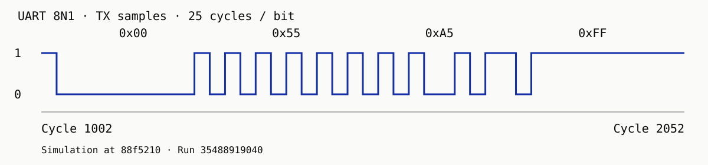
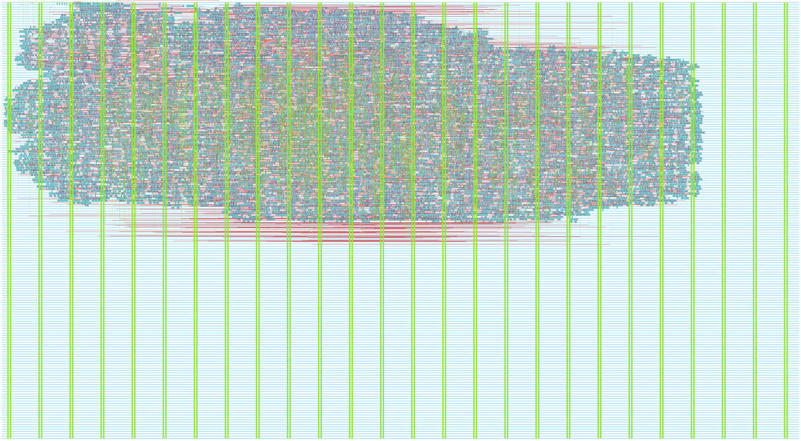

Independent hardware project
Programmable Protocol Emulator ASIC
Repeatable pin timing for debugging hardware protocols. A Verilog timing engine with Python tooling, developed for Jane Street’s Protocol Emulator ASIC Competition.
Functional verification passes. Physical design is in progress.
Repeatable behavior at the pins
A programmable instruction stream controls pin timing and replays the same stimulus while diagnosing a device.
Implemented
One timing engine, 64 × 24-bit instruction storage, a four-byte transmit FIFO, SPI host programming and control, and UART 8N1 firmware. An assembler and Python reference model define expected behavior independently of the RTL.
V1 spec at 88f5210Planned
UART receive, a second timing engine, capture and replay, and SPI and I2C emulation firmware.
Functional verification
Python reference model, cycle-by-cycle RTL comparison, pin decoding, formal safety proofs, and saved failure seeds.
| Python tooling | 200 tests passed |
|---|---|
| RTL simulation | 3 core differential suites and 3 top-level pin suites pass |
| Formal safety | Temporal induction proves the specified safety invariants. |
| Reproducibility | UART examples at bit periods 25 and 217, twelve random-program records, waveforms, and a checksum manifest. |
Source on the v1-electrical-closure branch · 88f5210 · Run 35488919040 · Exact workflow
UART timing example
The saved example transmits 0x00, 0x55, 0xA5, and 0xFF with a 25-cycle bit period.

Physical implementation
Routed layout and physical metrics from the last full CI physical run at c22a3d4. The later functional run at 88f5210 does not replace this physical result. Further routing work is under review in draft PR #9.
Drag to pan. Use the controls, double-click, or pinch to zoom.

| Process / allocation | IHP 130 nm CMOS5L / 6 × 4 Tiny Tapeout tiles |
|---|---|
| Die bounds | 1,289.28 × 710.64 µm (approximately 0.916 mm²) |
| Standard-cell area | 241,531 µm² excluding filler (approximately 0.242 mm²) |
| Core utilization | 26.76% |
| Clock target | 25 MHz (40 ns period) |
| Routed setup / hold slack | +21.09 ns / +0.10 ns |
| Magic DRC / LVS errors | 0 / 0 |
| Slew violations | Fast 0 / slow 125 / typical 23 under the configured 1.5 ns limit |
| Fanout violations | 1 at each corner |
| Acceptance | Electrical gate failing on slew and fanout. Precheck, gate-level, and acceptance jobs did not run. The routed hold margin is about 0.10 ns. |
Source on the v1-electrical-closure branch · c22a3d4 · Run 35460188674 · Exact workflow